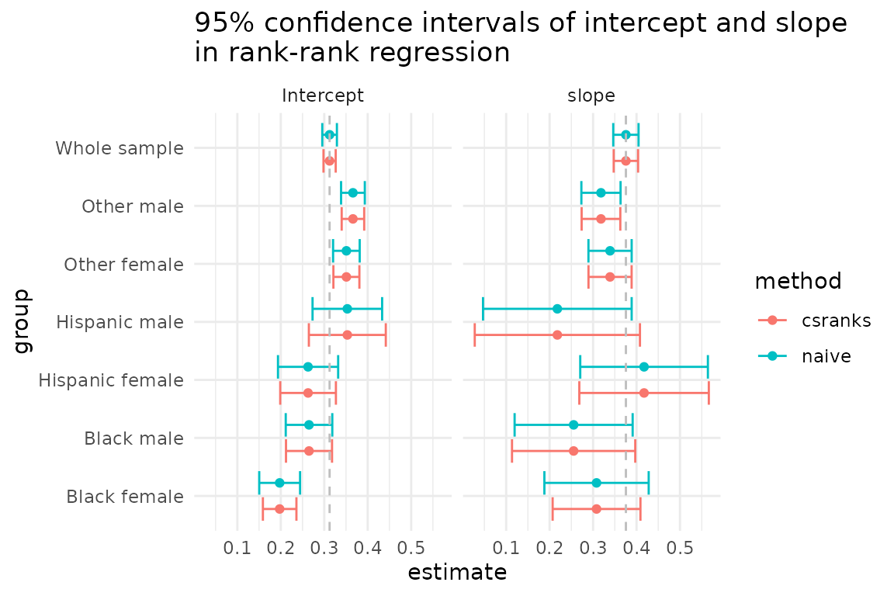

The following example illustrates how the csranks
package can be used for estimation and inference in rank-rank
regressions. These are commonly used for studying intergenerational
mobility.
In this example, we want to intergenerational income mobility by
estimating and performing inference on the rank correlation between
parents and their children’s incomes. The csranks package
contains an artificial dataset with data on children’s and parents’
household incomes, the child’s gender and race (black,
hisp or neither).
First, load the package csranks. Second, load the data
and take a quick look at it:
library(csranks)
data(parent_child_income)
head(parent_child_income)
#> c_faminc p_faminc gender race
#> 1 78771.72 77127.484 female neither
#> 2 79268.33 62723.303 female neither
#> 3 45405.98 65751.340 male neither
#> 4 81951.64 58723.050 male neither
#> 5 88350.33 6381.047 male neither
#> 6 161331.33 40325.466 female neitherIn economics, it is common to estimate measures of mobility by running rank-rank regressions. For instance, the rank correlation between parents’ and children’s incomes can be estimated by running a regression of a child’s income rank on the parent’s income rank:
lmr_model <- lmranks(r(c_faminc) ~ r(p_faminc), data=parent_child_income)
summary(lmr_model)
#> The number of residual degrees of freedom is not correct.
#> Also, z-value, not t-value, since the distribution used for p-value calculation
#> is standard normal.
#>
#> Call:
#> lmranks(formula = r(c_faminc) ~ r(p_faminc), data = parent_child_income)
#>
#> Residuals:
#> Min 1Q Median 3Q Max
#> -0.65601 -0.21986 -0.00376 0.22088 0.66495
#>
#> Coefficients:
#> Estimate Std. Error t value Pr(>|t|)
#> (Intercept) 0.312311 0.007161 43.61 <2e-16 ***
#> r(p_faminc) 0.375538 0.014319 26.23 <2e-16 ***
#> ---
#> Signif. codes: 0 '***' 0.001 '**' 0.01 '*' 0.05 '.' 0.1 ' ' 1
#>
#> Residual standard error: NA on 3892 degrees of freedomThis regression specification takes each child’s income
(c_faminc), computes its rank among all children’s incomes,
then takes each parent’s income (p_faminc) and computes its
rank among all parents’ incomes. Then the child’s rank is regressed on
the parent’s rank using OLS. The lmranks function computes
standard errors, t-values and p-values according to the asymptotic
theory developed in Chetverikov and Wilhelm (2023).
A naive approach, which does not lead to valid inference, would compute the children’s and parents’ ranks first and the run a standard OLS regression afterwards:
c_faminc_rank <- frank(parent_child_income$c_faminc, omega=1, increasing=TRUE)
p_faminc_rank <- frank(parent_child_income$p_faminc, omega=1, increasing=TRUE)
lm_model <- lm(c_faminc_rank ~ p_faminc_rank)
summary(lm_model)
#>
#> Call:
#> lm(formula = c_faminc_rank ~ p_faminc_rank)
#>
#> Residuals:
#> Min 1Q Median 3Q Max
#> -0.65601 -0.21986 -0.00376 0.22088 0.66495
#>
#> Coefficients:
#> Estimate Std. Error t value Pr(>|t|)
#> (Intercept) 0.312311 0.008579 36.41 <2e-16 ***
#> p_faminc_rank 0.375538 0.014856 25.28 <2e-16 ***
#> ---
#> Signif. codes: 0 '***' 0.001 '**' 0.01 '*' 0.05 '.' 0.1 ' ' 1
#>
#> Residual standard error: 0.2676 on 3892 degrees of freedom
#> Multiple R-squared: 0.141, Adjusted R-squared: 0.1408
#> F-statistic: 639 on 1 and 3892 DF, p-value: < 2.2e-16Notice that the point estimates of the intercept and slope are the
same as those of the lmranks function. However, the
standard errors, t-values and p-values differ. This is because the usual
OLS formulas for standard errors do not take into account the estimation
uncertainty in the ranks.
One can also run the rank-rank regression with additional covariates, e.g.:
lmr_model_cov <- lmranks(r(c_faminc) ~ r(p_faminc) + gender + race, data=parent_child_income)
summary(lmr_model_cov)
#> The number of residual degrees of freedom is not correct.
#> Also, z-value, not t-value, since the distribution used for p-value calculation
#> is standard normal.
#>
#> Call:
#> lmranks(formula = r(c_faminc) ~ r(p_faminc) + gender + race,
#> data = parent_child_income)
#>
#> Residuals:
#> Min 1Q Median 3Q Max
#> -0.66140 -0.20654 -0.00343 0.21421 0.72917
#>
#> Coefficients:
#> Estimate Std. Error t value Pr(>|t|)
#> (Intercept) 0.299823 0.018155 16.514 < 2e-16 ***
#> r(p_faminc) 0.323785 0.015123 21.411 < 2e-16 ***
#> gendermale 0.010862 0.008484 1.280 0.20042
#> raceblack -0.088215 0.020910 -4.219 2.46e-05 ***
#> raceneither 0.055726 0.018781 2.967 0.00301 **
#> ---
#> Signif. codes: 0 '***' 0.001 '**' 0.01 '*' 0.05 '.' 0.1 ' ' 1
#>
#> Residual standard error: NA on 3889 degrees of freedomIn some economic applications, it is desired to run rank-rank regressions separately in subgroups of the population, but compute the ranks in the whole population. For instance, we might want to estimate rank-rank regression slopes as measures of intergenerational mobility separately for males and females, but the ranking of children’s incomes is formed among all children (rather than form separate rankings for males and females).
Such regressions can easily be run using the lmranks
function and interaction notation:
grouped_lmr_model_simple <- lmranks(r(c_faminc) ~ r(p_faminc_rank):gender,
data=parent_child_income)
summary(grouped_lmr_model_simple)
#> The number of residual degrees of freedom is not correct.
#> Also, z-value, not t-value, since the distribution used for p-value calculation
#> is standard normal.
#>
#> Call:
#> lmranks(formula = r(c_faminc) ~ r(p_faminc_rank):gender, data = parent_child_income)
#>
#> Residuals:
#> Min 1Q Median 3Q Max
#> -0.65016 -0.21977 -0.00308 0.21750 0.68833
#>
#> Coefficients:
#> Estimate Std. Error t value Pr(>|t|)
#> genderfemale 0.28796 0.01119 25.74 <2e-16 ***
#> gendermale 0.33506 0.01107 30.27 <2e-16 ***
#> r(p_faminc_rank):genderfemale 0.40800 0.02046 19.94 <2e-16 ***
#> r(p_faminc_rank):gendermale 0.34516 0.02044 16.89 <2e-16 ***
#> ---
#> Signif. codes: 0 '***' 0.001 '**' 0.01 '*' 0.05 '.' 0.1 ' ' 1
#>
#> Residual standard error: NA on 3890 degrees of freedomIn this example, we have run a separate OLS regression of children’s ranks on parents’ ranks among the female and male children. However, incomes of children are ranked among all children and incomes of parents are ranked among all parents. The standard errors, t-values and p-values are implemented according to the asymptotic theory developed in Chetverikov and Wilhelm (2023), where it is shown that the asymptotic distribution of the estimators now need to not only account for the fact that ranks are estimated, but also for the fact that estimators are correlated across gender subgroups because they use the same estimated ranking.
A naive application of the lm function would produce the
same point estimates, but not the correct standard
errors:
grouped_lm_model_simple <- lm(c_faminc_rank ~ p_faminc_rank:gender + gender - 1, #group-wise intercept
data=parent_child_income)
summary(grouped_lm_model_simple)
#>
#> Call:
#> lm(formula = c_faminc_rank ~ p_faminc_rank:gender + gender -
#> 1, data = parent_child_income)
#>
#> Residuals:
#> Min 1Q Median 3Q Max
#> -0.65016 -0.21977 -0.00308 0.21750 0.68833
#>
#> Coefficients:
#> Estimate Std. Error t value Pr(>|t|)
#> genderfemale 0.28796 0.01233 23.35 <2e-16 ***
#> gendermale 0.33506 0.01192 28.10 <2e-16 ***
#> p_faminc_rank:genderfemale 0.40800 0.02135 19.11 <2e-16 ***
#> p_faminc_rank:gendermale 0.34516 0.02066 16.71 <2e-16 ***
#> ---
#> Signif. codes: 0 '***' 0.001 '**' 0.01 '*' 0.05 '.' 0.1 ' ' 1
#>
#> Residual standard error: 0.2674 on 3890 degrees of freedom
#> Multiple R-squared: 0.7858, Adjusted R-squared: 0.7855
#> F-statistic: 3567 on 4 and 3890 DF, p-value: < 2.2e-16One can also create more granular subgroups by interacting several characteristics such as gender and race:
parent_child_income$subgroup <- interaction(parent_child_income$gender, parent_child_income$race)
grouped_lmr_model <- lmranks(r(c_faminc) ~ r(p_faminc_rank):subgroup,
data=parent_child_income)
summary(grouped_lmr_model)
#> The number of residual degrees of freedom is not correct.
#> Also, z-value, not t-value, since the distribution used for p-value calculation
#> is standard normal.
#>
#> Call:
#> lmranks(formula = r(c_faminc) ~ r(p_faminc_rank):subgroup, data = parent_child_income)
#>
#> Residuals:
#> Min 1Q Median 3Q Max
#> -0.65574 -0.20769 -0.00387 0.21297 0.73248
#>
#> Coefficients:
#> Estimate Std. Error t value Pr(>|t|)
#> subgroupfemale.hisp 0.26280 0.03268 8.041 8.94e-16
#> subgroupmale.hisp 0.35313 0.04516 7.820 5.26e-15
#> subgroupfemale.black 0.19741 0.01968 10.031 < 2e-16
#> subgroupmale.black 0.26496 0.02702 9.805 < 2e-16
#> subgroupfemale.neither 0.35096 0.01525 23.006 < 2e-16
#> subgroupmale.neither 0.36603 0.01322 27.694 < 2e-16
#> r(p_faminc_rank):subgroupfemale.hisp 0.41733 0.07602 5.490 4.02e-08
#> r(p_faminc_rank):subgroupmale.hisp 0.21780 0.09697 2.246 0.024694
#> r(p_faminc_rank):subgroupfemale.black 0.30798 0.05154 5.976 2.29e-09
#> r(p_faminc_rank):subgroupmale.black 0.25528 0.07234 3.529 0.000417
#> r(p_faminc_rank):subgroupfemale.neither 0.33908 0.02532 13.390 < 2e-16
#> r(p_faminc_rank):subgroupmale.neither 0.31818 0.02270 14.018 < 2e-16
#>
#> subgroupfemale.hisp ***
#> subgroupmale.hisp ***
#> subgroupfemale.black ***
#> subgroupmale.black ***
#> subgroupfemale.neither ***
#> subgroupmale.neither ***
#> r(p_faminc_rank):subgroupfemale.hisp ***
#> r(p_faminc_rank):subgroupmale.hisp *
#> r(p_faminc_rank):subgroupfemale.black ***
#> r(p_faminc_rank):subgroupmale.black ***
#> r(p_faminc_rank):subgroupfemale.neither ***
#> r(p_faminc_rank):subgroupmale.neither ***
#> ---
#> Signif. codes: 0 '***' 0.001 '**' 0.01 '*' 0.05 '.' 0.1 ' ' 1
#>
#> Residual standard error: NA on 3882 degrees of freedomLet’s compare the confidence intervals for regression coefficients
produced by lmranks and naive approaches.
grouped_lm_model <- lm(c_faminc_rank ~ p_faminc_rank:subgroup + subgroup - 1, #group-wise intercept
data=parent_child_income)
summary(grouped_lm_model)
#>
#> Call:
#> lm(formula = c_faminc_rank ~ p_faminc_rank:subgroup + subgroup -
#> 1, data = parent_child_income)
#>
#> Residuals:
#> Min 1Q Median 3Q Max
#> -0.65574 -0.20769 -0.00387 0.21297 0.73248
#>
#> Coefficients:
#> Estimate Std. Error t value Pr(>|t|)
#> subgroupfemale.hisp 0.26280 0.03531 7.443 1.20e-13 ***
#> subgroupmale.hisp 0.35313 0.04083 8.649 < 2e-16 ***
#> subgroupfemale.black 0.19741 0.02397 8.236 2.41e-16 ***
#> subgroupmale.black 0.26496 0.02731 9.701 < 2e-16 ***
#> subgroupfemale.neither 0.35096 0.01561 22.481 < 2e-16 ***
#> subgroupmale.neither 0.36603 0.01394 26.265 < 2e-16 ***
#> p_faminc_rank:subgroupfemale.hisp 0.41733 0.07490 5.572 2.69e-08 ***
#> p_faminc_rank:subgroupmale.hisp 0.21780 0.08722 2.497 0.012563 *
#> p_faminc_rank:subgroupfemale.black 0.30798 0.06121 5.032 5.08e-07 ***
#> p_faminc_rank:subgroupmale.black 0.25528 0.06926 3.686 0.000231 ***
#> p_faminc_rank:subgroupfemale.neither 0.33908 0.02536 13.370 < 2e-16 ***
#> p_faminc_rank:subgroupmale.neither 0.31818 0.02300 13.831 < 2e-16 ***
#> ---
#> Signif. codes: 0 '***' 0.001 '**' 0.01 '*' 0.05 '.' 0.1 ' ' 1
#>
#> Residual standard error: 0.2633 on 3882 degrees of freedom
#> Multiple R-squared: 0.7927, Adjusted R-squared: 0.792
#> F-statistic: 1237 on 12 and 3882 DF, p-value: < 2.2e-16
library(ggplot2)
theme_set(theme_minimal())
ci_data <- data.frame(estimate=coef(lmr_model),
parameter=c("Intercept", "slope"),
group="Whole sample",
method="csranks",
lower=confint(lmr_model)[,1],
upper=confint(lmr_model)[,2])
ci_data <- rbind(ci_data, data.frame(
estimate = coef(grouped_lmr_model),
parameter = rep(c("Intercept", "slope"), each=6),
group = rep(c("Hispanic female", "Hispanic male", "Black female", "Black male",
"Other female", "Other male"), times=2),
method="csranks",
lower=confint(grouped_lmr_model)[,1],
upper=confint(grouped_lmr_model)[,2]
))
ci_data <- rbind(ci_data, data.frame(
estimate = coef(lm_model),
parameter = c("Intercept", "slope"),
group = "Whole sample",
method="naive",
lower=confint(lm_model)[,1],
upper=confint(lm_model)[,2]
))
ci_data <- rbind(ci_data, data.frame(
estimate = coef(grouped_lm_model),
parameter = rep(c("Intercept", "slope"), each=6),
group = rep(c("Hispanic female", "Hispanic male", "Black female", "Black male",
"Other female", "Other male"), times=2),
method="naive",
lower=confint(grouped_lm_model)[,1],
upper=confint(grouped_lm_model)[,2]
))
ggplot(ci_data, aes(y=estimate, x=group, ymin=lower, ymax=upper,col=method, fill=method)) +
geom_point(position=position_dodge2(width = 0.9)) +
geom_errorbar(position=position_dodge2(width = 0.9)) +
geom_hline(aes(yintercept=estimate), data=subset(ci_data, group=="Whole sample"),
linetype="dashed",
col="gray") +
coord_flip() +
labs(title="95% confidence intervals of intercept and slope\nin rank-rank regression")+
facet_wrap(~parameter)
The coefficient calculated for the whole sample has a narrow
confidence interval, which is expected. In this example, there are some
differences in the correct (csranks) confidence intervals
and the incorrect (naive) confidence intervals, but they
are rather small. The paper by Chetverikov and Wilhelm (2023), however,
provides empirical examples in which the differences can be quite
large.
Check out the documentation of individual functions at the package’s website and further examples in the package’s Github repository.